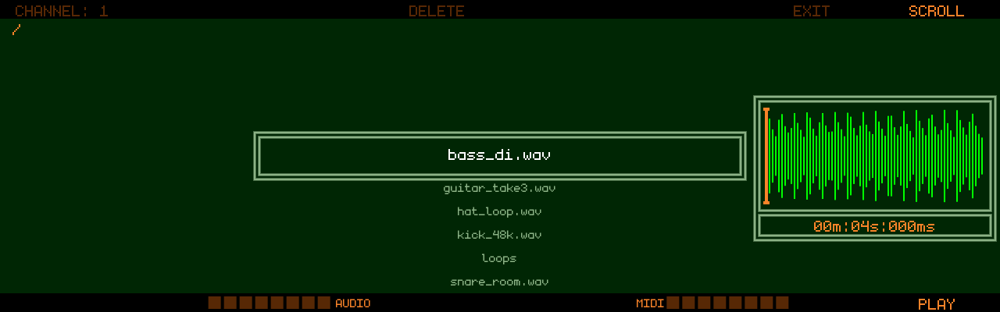
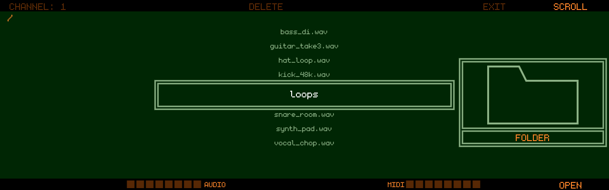
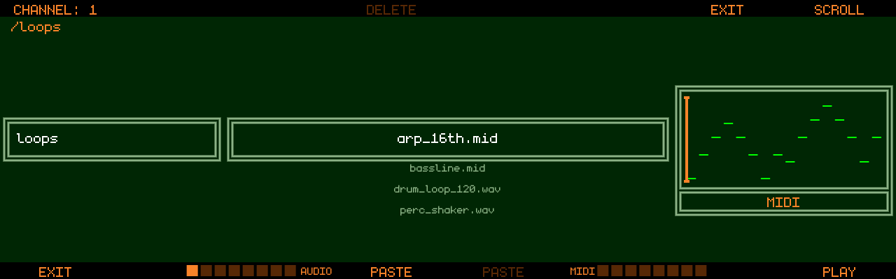

USB Browser
The USB Browser is Track8’s way in and out of a USB stick: audition WAV and MIDI files on the stick, pull one into the clipboard to paste into the project, write the clipboard back to the stick as a file, or delete files you no longer need. It is a file browser for the recorder, not a sample library — one file at a time, straight into the clipboard.
Open it with 

- A FAT32 USB stick has to be connected. Without one, Track8 shows
NO USB STICK FOUND; a stick it cannot read showsERROR LOADING FROM USB. - The browser does not open while a recording is running (
Browsingrefused), and it closes on its own — back to the Audio Overview — when the stick is pulled. - Opening the browser stops playback.
- In the Companion App there is no stick: a system folder picker opens instead, and the folder you choose becomes the browser’s root. Saving the clipboard (PASTE, see below) works right in that folder (since v1.2.4-SNAPSHOT).

Navigating
The list shows the folders, .wav and .mid files of the current folder,
sorted by name; everything else is hidden. The extension may be written in
any letter case (.WAV, .Mid) and .midi is accepted too (since v1.2.4-SNAPSHOT) — before
that only lower-case .wav / .mid were listed. The path is shown
top-left, and at the root of the stick the used space (USED:).
A folder with nothing to list shows EMPTY FOLDER — it exists, but holds
no WAV or MIDI files. EXIT works as usual (since v1.2.4-SNAPSHOT); until then such a folder
came up as a blank screen.
- Encoder 8 (SCROLL) — move the selection
- Track 8 — OPEN the selected folder, or PLAY / STOP the selected file (Encoder 8 push does the same)
- Track 1 or Encoder 7 push — EXIT the current folder, one level up. At the root the browser has nowhere to go; use any screen button to leave it.

Previewing files
Selecting a file loads it in the background, ready to play with Track 8 and to copy.
WAV files show their waveform and length on the right. Mono and stereo
files at any sample rate and bit depth are accepted; they are converted to
Track8’s 48 kHz on the way in. The waveform is drawn while the file loads
and brightens once it is complete. A file Track8 cannot decode shows
Reading error.
A file longer than 12 minutes shows LONG FILE - FIRST 2 MIN
above the waveform: only its first two minutes are loaded for the waveform
and for PLAY, while the length line shows the whole file (since v1.2.4-SNAPSHOT). Such a file
is imported by streaming (see below) — until v1.2.3 it was refused with
Too Long.
MIDI files show a piano-roll preview and play on the MIDI channel
selected with Encoder 1 (CHANNEL 1–16) through Track8’s MIDI
outputs, so you hear them on whatever synth listens on that channel. The
first track of the file is used; the channels and tempo stored in the file
are ignored and the file plays at the project tempo.

Importing into the project
Press
- a
.wavor an AIFF (.aif/.aiff/.aifc) goes into the audio clipboard as one track - a
.midgoes into the MIDI clipboard as one track
Audio files are recognised by their content, not their name (since v1.2.4-SNAPSHOT): an AIFF file that was named .wav — Logic’s Space Designer exports its impulse responses that way — loads like any other. WAV and AIFF at any sample rate, 8 to 32 bit or float, mono or stereo are converted to the project format on the way in; AIFF-C files compressed with anything but plain PCM, and files with more than two channels, show Reading error.
The clipboard bars at the bottom of the screen (AUDIO / MIDI) show what is loaded. Then leave the browser, select the destination track on the Audio Overview or MIDI Overview, place the playhead and press Paste — exactly like pasting a section you copied within the project. The imported audio can be shaped in the Audio Clipboard Modifier first, MIDI in the MIDI Clipboard Modifier.
- Copy waits for the file to finish loading. If you press it too early, the waveform flashes red — press Copy again once it has settled.
- A file copied from the stick replaces the whole clipboard, including the Marker clipboard filled by a LOOP + Copy.
- Selecting a WAV file in the browser empties the audio clipboard when the clipboard and the file together would exceed 12 minutes, to make room for the file (since v1.2.4-SNAPSHOT) — shorter combinations keep the clipboard. Until v1.2.3 browsing any WAV emptied it. Anything long you copied inside the project and still need has to be pasted before you browse. The MIDI clipboard is never affected.
Long files (streamed import)
A WAV or AIFF longer than 12 minutes — a long jam, an album side, a podcast — does not fit the clipboard’s memory, so Track8 imports it differently (since v1.2.4-SNAPSHOT), with the same two presses (#347):
- Copy puts a reference to the file in the audio clipboard (the clipboard bar fills as usual).
- Paste on the Audio Overview or Audio Edit streams the file from the
stick onto the selected track, a few seconds at a time. An
IMPORTINGoverlay with a percentage bar shows the progress; a 40-minute file takes a minute or two. Leave the stick in until it is done.
What is different about a long import:
- It cannot be opened in the Audio Clipboard Modifier
(
LONG IMPORT - NO MODIFIER): paste it and edit on the tape with markers, LOOP + Cut / Copy, SPLICE and Audio Edit. - SHIFT + Paste (bounce) pastes it plainly onto the selected track.
- The browser’s PASTE (save to stick) is dim: the file is already on the stick.
- Pasting it over existing audio longer than 12 minutes cannot be
undone (
NO UNDO FOR THIS PASTE); pasting onto empty tape, or over less, undoes as usual. - Pulling the stick empties a clipboard that refers to a file on it
(the audio clipboard bar goes dark); plug it back in and Copy again. Should
the file be gone for another reason, Paste says
FILE NOT FOUNDand empties the clipboard too. Pulled during the import, what was written stays (IMPORT STOPPED AT …). - The tape is 3 hours long: a file that would reach past that is cut
off at the end (
CLIPPED AT TAPE END), see the Audio Overview.
Picking an impulse for CONVOLVE
The browser also opens from the Audio Clipboard Modifier’s
CONVOLVE group (push Encoder 4, SOURCE; since v1.2.4-SNAPSHOT).
It then says IMPULSE FOR CONVOLVE along the bottom instead of the
clipboard bars: browse and preview as usual, and Copy on a .wav takes
the file’s first 5 s as the impulse and returns to the modifier (WAV or AIFF alike) — the
clipboard is not touched, whatever its size. Track 1 at the root of
the stick (BACK) returns without a file; PASTE is not offered in this mode.
Saving the clipboard to the stick
Inside a folder (not at the root of the stick; in the Companion App also in the picked folder itself), two PASTE labels appear on Track 4 and Track 5:
- Track 4 — PASTE writes the audio clipboard as a
.wav. A single-track clipboard is written as it is; a multi-track clipboard (from a LOOP + Copy, for example) is mixed down to one stereo file using the current volume, pan and automation of the source tracks. - Track 5 — PASTE writes the MIDI clipboard as a
.mid, one MIDI track per clipboard track.
Track8 asks for a file name on the keyboard (the extension is added for
you); names already used in that folder are refused. A Saving as WAV /
Saving as MID message shows while the file is written.
If the audio PASTE label is dim although you copied something, the folder’s first WAV file was too long to keep next to your clipboard (see Importing): copy again and save into a folder that starts with a sub-folder, a MIDI file or a shorter WAV. It is also dim while the clipboard holds a long file, which is on the stick already.
Deleting
Hold SHIFT and push Encoder 4 (DELETE) to delete the selected
file or folder. A confirmation asks DELETE FILE? / DELETE FOLDER? with
the name — Track 6 confirms, Track 3 cancels. Deleting a folder
removes everything inside it.
Controls
| Control | Action |
|---|---|
| Encoder 1 | MIDI channel for MIDI file preview |
| Encoder 4 (push, with SHIFT) | DELETE the selected file or folder |
| Encoder 7 (push) | EXIT the current folder |
| Encoder 8 | SCROLL the list; push = OPEN / PLAY / STOP |
| Track 1 | EXIT the current folder |
| Track 4 | PASTE the audio clipboard as a WAV file (inside a folder) |
| Track 5 | PASTE the MIDI clipboard as a MIDI file (inside a folder) |
| Track 8 | OPEN folder / PLAY / STOP file |
| Copy | Copy the selected file into the audio or MIDI clipboard |
| Any screen button | Leave the browser |